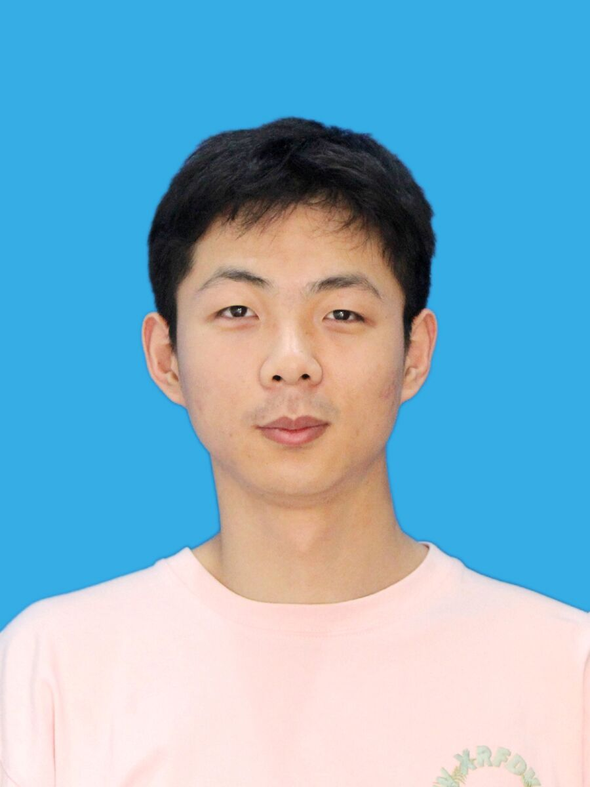

个人简介

你好，我是汤逸凡，目前是安徽大学人工智能学院硕士研究生。 本科和硕士阶段均从事计算机相关学习与研究。
我的主要研究兴趣包括深度强化学习、多智能体强化学习、 智能体通信和具身智能。
目前正在寻找人工智能算法、强化学习及具身智能相关岗位。
研究方向
- 深度强化学习
- 多智能体强化学习
- 基于通信的多智能体协作
- 具身智能与机器人决策
- 智能体长期记忆与信息融合
论文成果
CoVarNet: Contrastive Variational Network for Communication in Multi-Agent Reinforcement Learning
Lu Ren, Tang Yifan, Ma Qichao, Liu Wenhang, Sun Changyin
Expert Systems with Applications, 2026
项目经历
具身智能学习项目
学习视觉感知、机器人控制、强化学习和视觉语言动作模型等技术。
联系方式
邮箱：pigandhua@163.com
GitHub： https://github.com/TangY1fan
Google Scholar： 个人学术主页